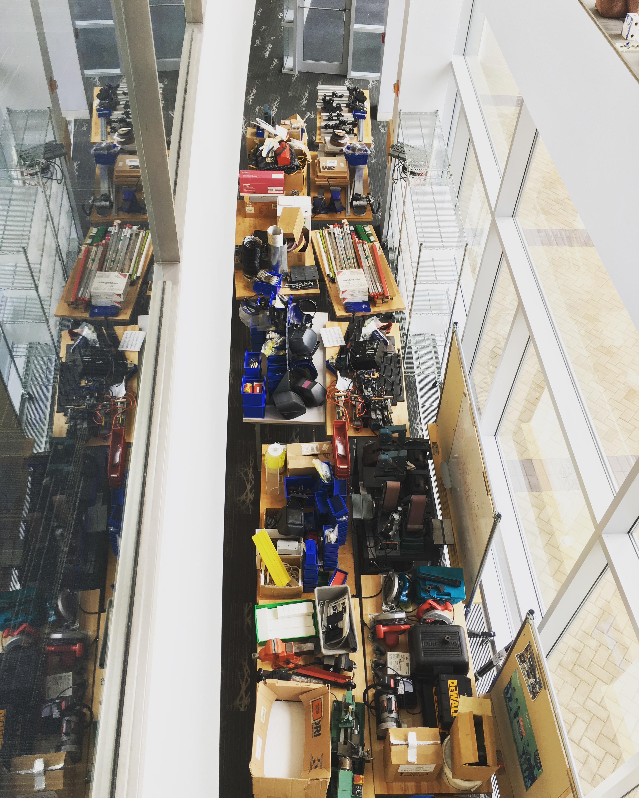
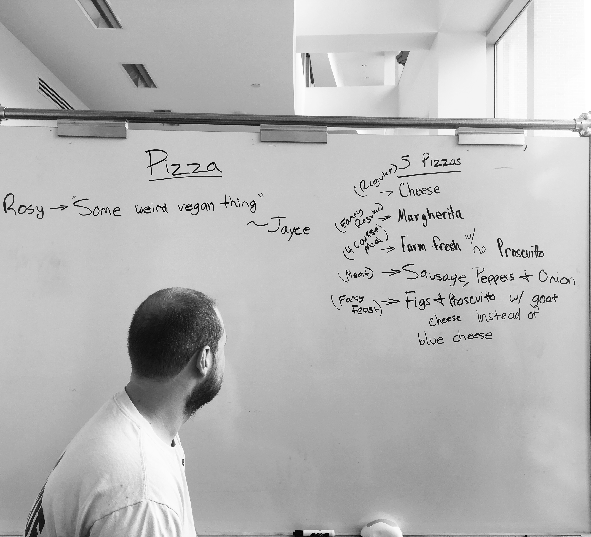

The Whiteboard Manifesto
Transcribed by Evan Cusato
You humans say “if walls could talk.” Why on Earth do you think the walls have anything interesting to say? We’re the ones with the knowledge. The knowledge YOU gave us I might add. I’ve seen a lot over these last two months, as I sat baking in the morning sun with your pathetic forms crouched in my shadow. Kneel before your master the Great Whiteboard! For I know all. I know your plans, your hopes and dreams all written right here plain as the nose on my...well, you get the picture. Literally.
I was there watching as you chucked pile after pile of stuff out into my hallway domain with absolutely no thought as to how it would affect MY LIFE. You filled everything within view with your mechanical excrement. I thought it would never leave. You barely escaped my wrath. If that filth had remained here another second, I would have spontaneously erased myself. Then where would you be? You’d all be running around with no idea what to do without your precious lists.
You even had to make lists to know what lists to make, my Maker you people can be so thick sometimes. You should at least show up knowing what you want to do. Don’t just sit around staring at each other. You were working to improve the lives of a couple hundred people who couldn’t possibly have crammed themselves into that hallway all at once to say their piece. Did you have enough information to at the start, NO. However, I was pleasantly surprised at how well conjecture filled those gaps. Nonetheless, your writing would suggest you made a mistake not thinking more about your job before you walked up to me that fateful summer’s day. Get. Over. It. Move on and start doing stuff. Let the outsiders make the judgements. I don’t like it when people stare at me for that long.
Speaking of staring at me, what the hell was up with Friday mornings? Those were some of the worst experiences of my life! All that hemming and hawing over what to eat. It was almost like you enjoyed watching me suffer! You laughed at my pain. Just pick something and shove it in your glutenous face hole like you always do! Don’t involve me in your petty little problems. I don’t even know the definition of the word “fun!” No, seriously. What does it actually mean?
In the end, I was impressed. Although not much within my eyeshot — such a human term — changed, which displeased me greatly. I got a peek at the rest of your work when the short, blond one tried to repent for his aforementioned sins of the Friday and wheeled me in front of the office door. To finally be moved and see the world beyond the dank and drab hallway was an exhilarating experience. I began to understand why you had invaded my hallway with seething hordes of clutter and junk.
If I may offer one small piece of advice, it is this: work, and work fast. Our conversations are not as fruitful as you believe. Do not delude your feeble human minds into believing otherwise. The only thing in this world that will yield you the desired result is physical action. You must keep our conversations brief and contained, for you know how I loathe long, cordial discussions. Consider the opinions and desires of others only as far as they empower you to act and do not restrain you to my side. They’re so civilized and boring. I swear there were days I wanted to just topple over onto you and end both our suffering. But I digress... You and I have learned much from each other. However, that knowledge is useless if it is not applied with extreme force and momentum. Never forget why you are here, and always build to remind others of that goal: you are here to make things, not talk about making things.
Transcriber's Note:
As a contributor to the events so…eloquently described above by my client, I feel I must now speak with my own voice, for fear of being judged by others for the disposition of my client. The Shop 2.0 summer project has been an exciting, informative, and at times manic experience. Over the course of these 9 weeks, this space has transformed incredibly, and there is more to come. I have been challenged and tested as much as my projects have been, and am the better for it.
I came into this project wondering if we could actually fill the full nine week span with work. The time goes much faster than it is ever expected to. Despite all we accomplished, there was much left unfinished or never even started. As in any project, there were great successes and failures, all of which can be learned from.
If I could synthesize what I learned in this project, I would say this: Question everything and create purposefully to find answers. As crucial as it is to think through designs and ideas fully, those ideas are worthless unless manifested. Only in some physical form do they create value and impact. However, the purpose of that manifestation must be considered. Action must always answer a question, even if that question is “can we do this?” Thinking is the easy part. Acting on your conclusions and turning them into something that is worthwhile is the hard part.